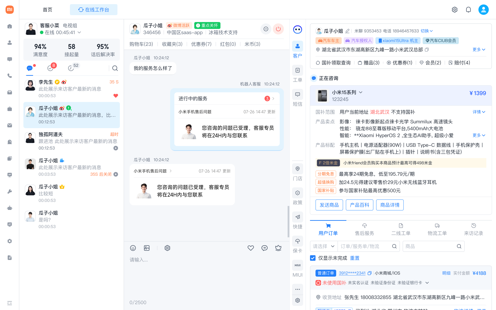
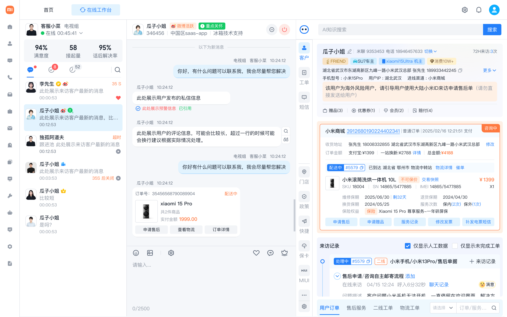
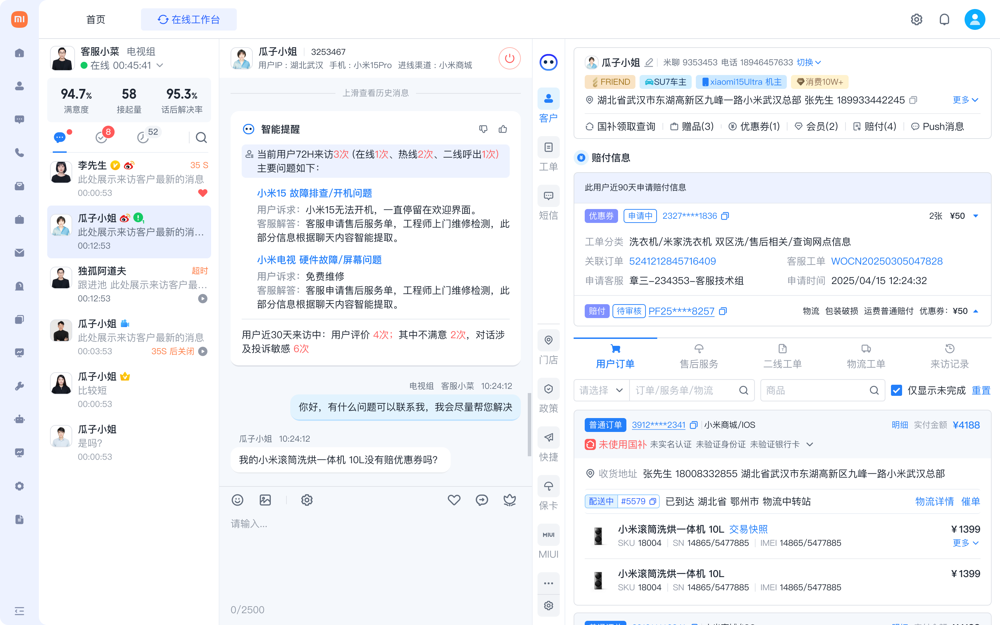
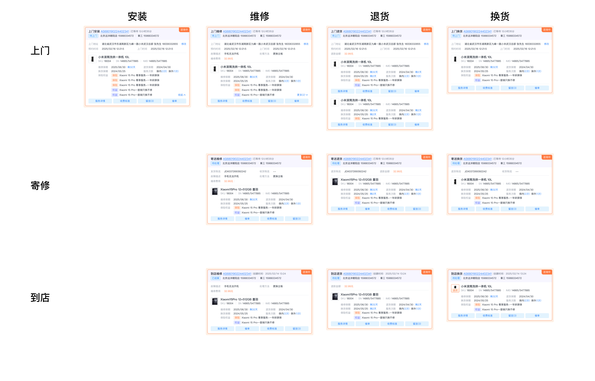
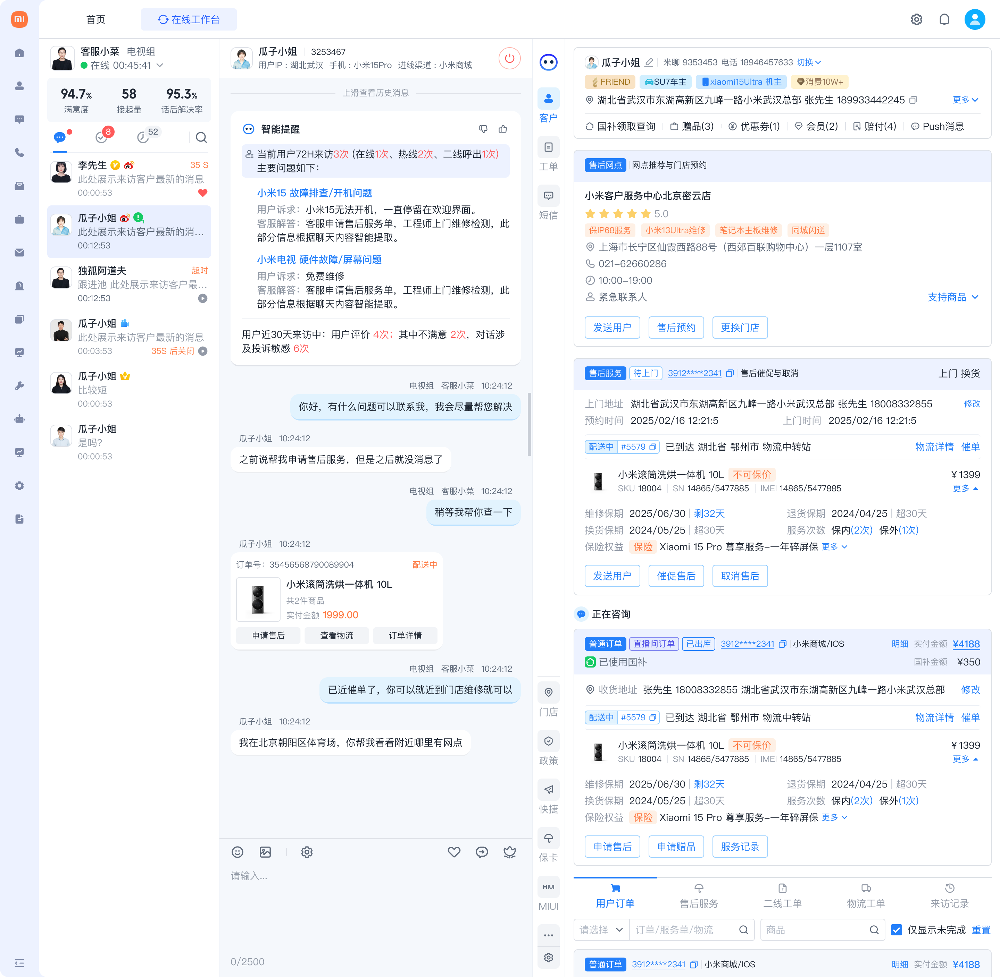

一屏可读
设计原则：降低认知负荷，而非堆砌信息。将 4+ 系统的碎片数据按"用户画像 - 订单 - 风险 - 服务记录"的优先级重组阅读动线，确保客服在一屏内完成判断。
取舍：砍掉了 60% 的非核心字段，只保留与当前工单直接相关的信息。
以"信息前置 + 意图识别 + 卡片化交互"为核心策略，重构客服坐席的工作台体验。 让客服从"被动查询"变为"主动服务"，将分散在多个系统的用户数据、订单、 售后记录聚合为一屏可读的信息视图，同时引入 AI 能力实现意图识别与方案自动推荐。

智能客服工作台全景：左侧会话列表 + 中间智能对话 + 右侧信息聚合面板，AI 驱动的一站式服务体验
客服处理售后需在 4+ 系统间反复切换查询，平均处理时长高，用户体验差。
将用户全景信息聚合到一屏，结合 AI 意图识别，实现从被动查询到主动服务的转变。
卡片化信息架构 + AI 意图识别引擎 + 智能推荐系统，打造一站式坐席工作台。
AHT 从 12min 降至 7.8min，FCR 从 61% 提升至 83%，CSAT 从 3.9 升至 4.7。
在大型电商平台的售后场景中，客服坐席面对的不仅是用户的问题，还有分散在多个系统中的碎片化信息。 用户等待时间长、客服操作路径深、风险判断缺依据，成为制约服务效率与满意度的三大核心问题。
购买了产品后遇到安装、故障、退换等问题，期望快速获得清晰的解决方案。
需要在有限时间内准确判断用户意图并给出最优售后方案。
追求更低的服务成本和更高的满意度，同时需要防范恶意索赔风险。
嵌入真实客服工位，记录完整操作链路和系统切换行为
抽样分析对话轮次、意图识别准确度、服务路径分布
覆盖新手/熟练/资深三类客服，提炼差异化痛点

跟坐观察中发现，客服接待一位国外用户时，需要同时关注左侧会话列表、中间聊天窗口、 右侧信息面板三个区域。仅右侧面板就需要承载用户基本信息、订单详情、设备信息、服务记录等多个模块。
在改版前，这些信息分散在 CRM、OMS、售后系统等 4+ 个平台中。 日志分析显示，每处理一个工单平均需要切换 6.3 次系统标签页， 其中 78% 的时间消耗在查找和确认信息上，而非实际解决问题。
核心矛盾：客服的认知资源被"找信息"耗尽，而非用于"解决问题"。
用户画像、订单详情、服务记录、赔付历史散落在 CRM、OMS、售后系统等 4+ 个平台。日志分析显示，客服每处理一个工单平均切换 6.3 次系统标签页，78% 的时间在"找信息"而非"解决问题"。
会话日志分析显示，用户描述通常模糊（如"手机有问题"），客服平均需要 3.7 轮追问才能锁定服务类型（安装/维修/退换）和服务方式（上门/寄修/到店）。新手客服甚至需要 5+ 轮。对话轮次越多，用户流失风险越大。
将用户全景数据整合到工作台右侧面板，以卡片化方式结构化展示，让客服"一眼看清"用户背景。
引入 NLP 意图识别，从对话中自动提取服务需求，结合用户上下文主动推荐最优解决方案。
围绕"让客服在正确的时间看到正确的信息"这一核心原则，设计了三层递进策略： 信息层做聚合降噪，智能层做意图识别与推荐，交互层用卡片实现一键操作。
设计原则：降低认知负荷，而非堆砌信息。将 4+ 系统的碎片数据按"用户画像 - 订单 - 风险 - 服务记录"的优先级重组阅读动线，确保客服在一屏内完成判断。
取舍：砍掉了 60% 的非核心字段，只保留与当前工单直接相关的信息。
设计原则：关键信息前置于操作之前。跟坐发现客服常在服务完成后才发现用户有恶意索赔记录。将风险标签提升到会话接入的第一秒——客服还没开口，风险等级已可见。
取舍：牺牲了部分面板空间，换取决策安全感。
设计原则：AI 做推荐，人做决策。意图识别结果以"建议卡片"形式呈现，客服可一键采纳也可手动修改。AI 置信度低于阈值时自动降级为辅助提示，而非强制推荐。
取舍：放弃了"全自动派单"方案，保留人工确认环节。
设计原则：把"看 - 判断 - 操作"的链路压缩到一张卡片内。每张售后卡片同时承载信息展示和操作入口，客服无需跳转其他系统即可发起、跟进或转派。
取舍：牺牲了信息密度上限，换取操作路径最短化。
AI 识别到意图后弹出浮窗推荐方案。问题：打断客服正在进行的对话操作，跟坐观察中被抱怨最多。
淘汰在聊天气泡之间插入推荐卡片。V1 原型测试发现：卡片被大量消息淹没，客服回滚查找率高达 42%。
淘汰AI 推荐内容固定在右侧面板，不侵入对话区。客服在需要时自然扫视，操作路径最短，认知干扰最低。
采纳决策依据：跟坐观察 + V1 原型灰度测试数据。方案 C 的任务完成率比 B 高 18%，且客服主观满意度评分最高（4.3 vs 3.1 vs 2.6）。
策略 02 "风险前置"的具体落地。右侧面板自动加载用户近 90 天的赔付历史， 包括赔付次数、累计金额、赔付原因分布。
高频赔付用户会触发风险预警标签，辅助客服在处理新工单时做出更审慎的判断。 这个设计有效减少了恶意索赔率，同时保障了正常用户的服务效率。

右侧信息面板的内容并非平铺罗列，而是按照客服的实际决策顺序设计了三层信息优先级。越靠上的信息越影响客服的第一判断。
自动加载画像与风险标签
右侧面板展示订单、设备、记录
AI 分析对话，锁定服务类型
推送售后卡片 / 推荐门店
客服在卡片上直接发起服务
服务状态实时推送至工作台
每个模块都针对一个具体的业务痛点，从用户识别、风险判断、方案推荐、门店匹配到服务跟进， 形成完整的售后服务体验闭环。以下展示每个模块的设计细节与界面实现。
当用户进入会话时，系统自动识别用户身份属性（国内/国外、VIP 等级、历史行为特征）， 并以醒目标签展示在聊天窗口顶部和右侧面板中。国外用户会触发专属提醒， 提示客服注意时区、语言和物流差异。
国外用户自动识别：左侧标记用户属性，中间展示 AI 推荐回复，右侧聚合用户全景信息
右侧面板自动加载用户近 90 天的赔付历史，包括赔付次数、累计金额、原因分布。 高频赔付用户触发风险预警标签，辅助客服做出更审慎的判断。
赔付风险卡片：右侧展示赔付历史明细与金额统计，中间对话区域 AI 自动推荐处理策略
信息密度最高的模块。根据产品类型、故障情况、用户位置和保修状态， 系统从 12 种组合中智能匹配最优方案，以结构化卡片展示。
| 安装 | 维修 | 退货 | 换货 | |
|---|---|---|---|---|
| 上门 | 工程师上门安装调试 | 上门检修，适用于大件 | 上门取件退货 | 上门取旧换新 |
| 寄修 | - | 寄出至维修中心 | 寄回并自动退款 | 寄出旧件发新件 |
| 到店 | - | 到店当场诊断维修 | 到店退货当场退款 | 到店取件换新 |

售后卡片矩阵全景：3 种服务方式 x 4 种服务类型 = 12 种方案的结构化卡片设计，每张卡片包含完整服务信息与一键操作入口
当用户在对话中表达到店意图（如"附近有维修点吗""我想去线下看看"）， AI 实时捕捉意图信号，结合用户收货地址自动匹配附近门店。 右侧面板推送门店推荐卡片，展示门店名称、距离、营业时间、联系方式。

意图识别与门店推荐：中间 AI 识别"维修+到店"意图，右侧自动推送门店列表与服务进度卡片
当服务进度发生变更（如工程师已派单、维修已完成、用户已确认收货）， 系统自动将状态变更卡片推送到对应客服的工作台。 卡片上附带快捷操作按钮，如"联系用户确认""关闭工单"等。
卡片推送机制：中间区域展示"进行中的服务"状态卡片，右侧面板同步展示服务详情与操作入口
Module 01 - 用户识别与智能提醒
Module 02 - 近 90 天赔付风险卡片
Module 03 - 售后方案矩阵卡片
Module 04 - 意图识别推荐门店
Module 05 - 坐席工作台卡片推送，服务状态实时推送至客服工作台
项目上线后持续跟踪核心指标，在效率、质量、成本三个维度均取得了显著改善。 以下是关键数据成果和设计复盘。
V1 方案曾尝试将 AI 推荐卡片嵌入聊天对话流中（方案 B）。灰度测试发现消息量大时卡片被快速淹没，客服回滚查找率 42%。这迫使我们转向右侧面板常驻方案——虽然牺牲了"即见即用"的直觉性，但解决了信息持久性问题。
AI 意图识别的置信阈值经过三轮调优。初期设为 60% 时覆盖率高但误判多，客服反而需要额外纠错；最终提升到 82%，覆盖率降至 71%，但客服采纳率从 34% 跃升至 78%。好的 AI 体验不是"什么都推"，而是"推了就对"。
当前方案对"多意图并发"场景（用户同时咨询维修 + 退货）的支持仍不够好——右侧面板只能展示一个主推荐。下一步计划引入意图优先级排序和对话情绪识别，当检测到用户情绪负面时调整推荐策略。
不是通用方法论，而是在这个项目中真正起作用的做法：
5 天嵌入真实工位，发现 78% 时间在找信息
500+ 会话分析，锁定 6.3 次系统切换的瓶颈
3 种 AI 介入模式对比测试，数据决定取舍
V1 对话内嵌方案失败，迭代至常驻面板
AI 置信度从 60% 调至 82%，采纳率 34%→78%